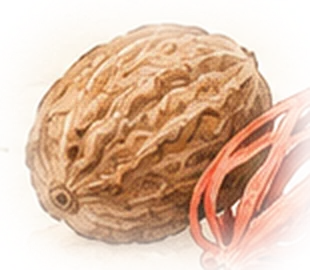
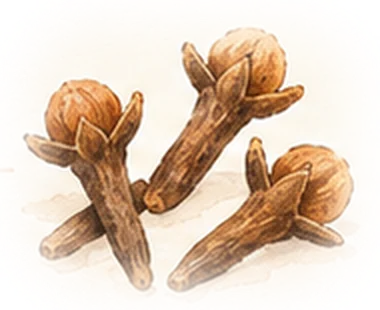
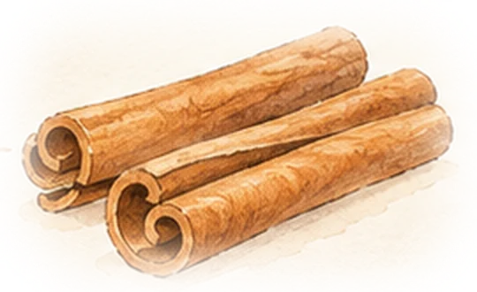
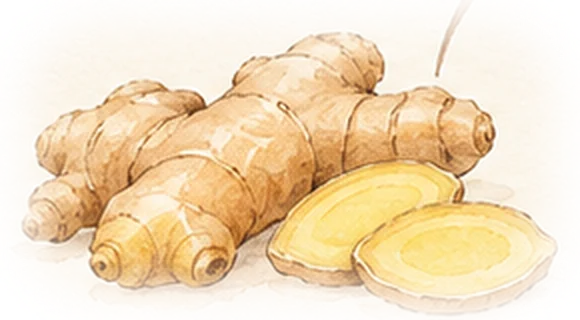

El Llibre de Sent Soví és un dels receptaris més antics d’Europa. És anònim, està escrit en català i té 72 receptes per a cases riques.
En aquesta salsa hi ha almenys quatre espècies de l’altra punta del món: la nou moscada (de les illes Banda), el clau (de les Moluques), la canyella (de Sri Lanka) i el gingebre. El safrà, en canvi, es conreava aquí mateix.
La recepta també diu que la salsa «no ha de ser gaire vermella, sinó de color entre canyella i safrà». El color importava: un plat especiat i daurat demostrava riquesa.

Nou moscadailles Banda
ClauMoluques
CanyellaSri Lanka
GingebreÀsia tropical- Safràaquí mateix